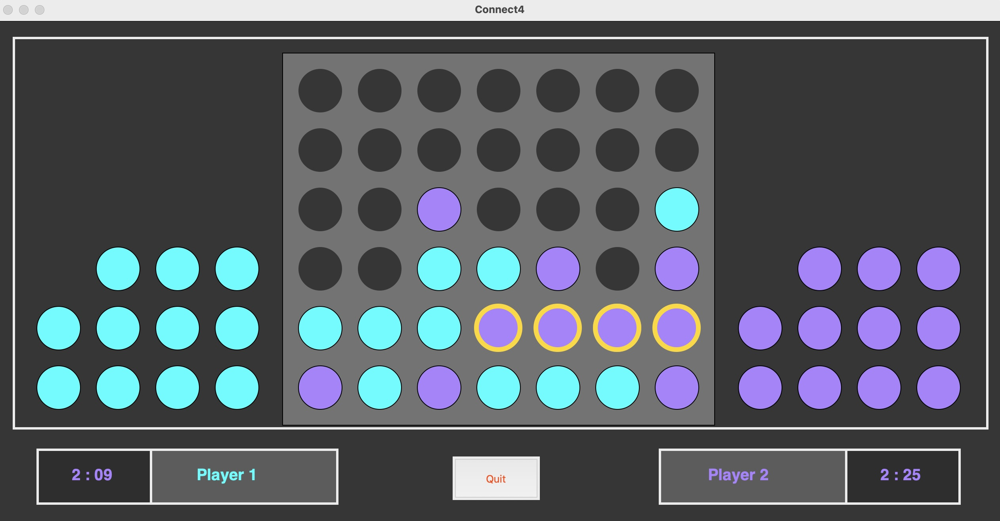
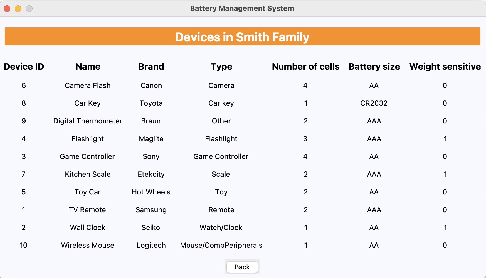

Check Out My Best Projects
Traffic visualisation using 3js
Simulates traffic flow through a 4 way intersection with various signalling patterns in an engaging 3d view.
Yoga pose detection

2024 Summer Internship
Description: Detects yoga poses in real time using privacy preserving techniques.
Cache Implementation

Computer Architecture
Description: Simulates a cache with various replacement techniques.
Connect4 game
Python
Description: A fun game to connect 4 dots horizontaly, verticaly or diagonally.
Battery Management
Database Management
Description: Suggests batteries for specific devices based on cost per day performance.